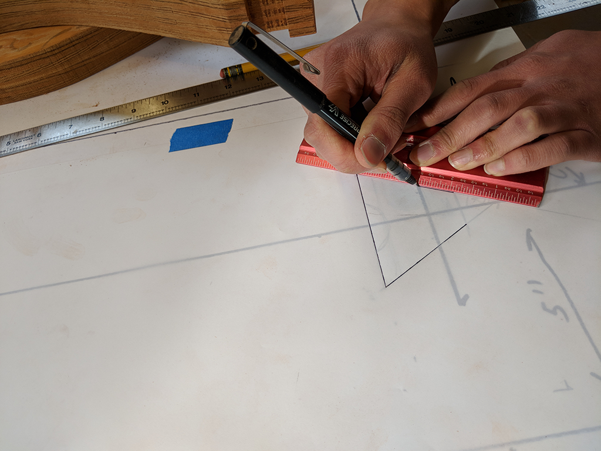
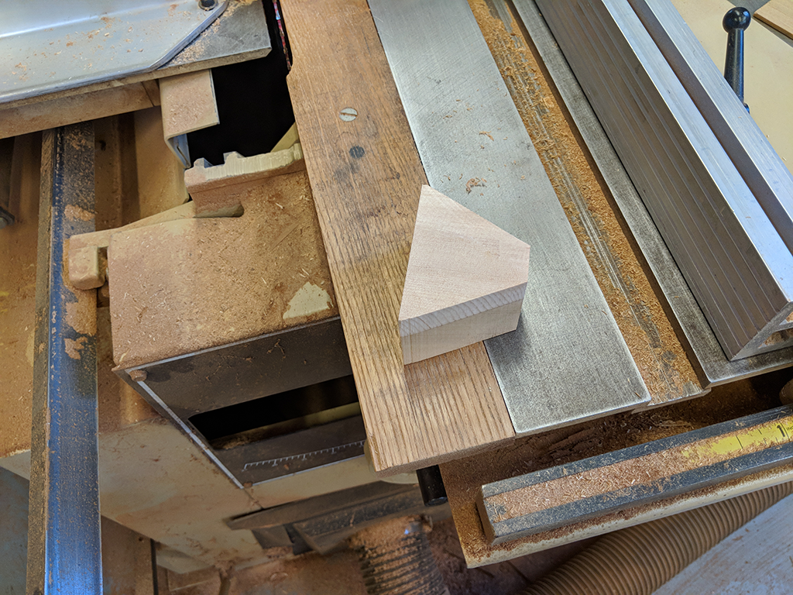
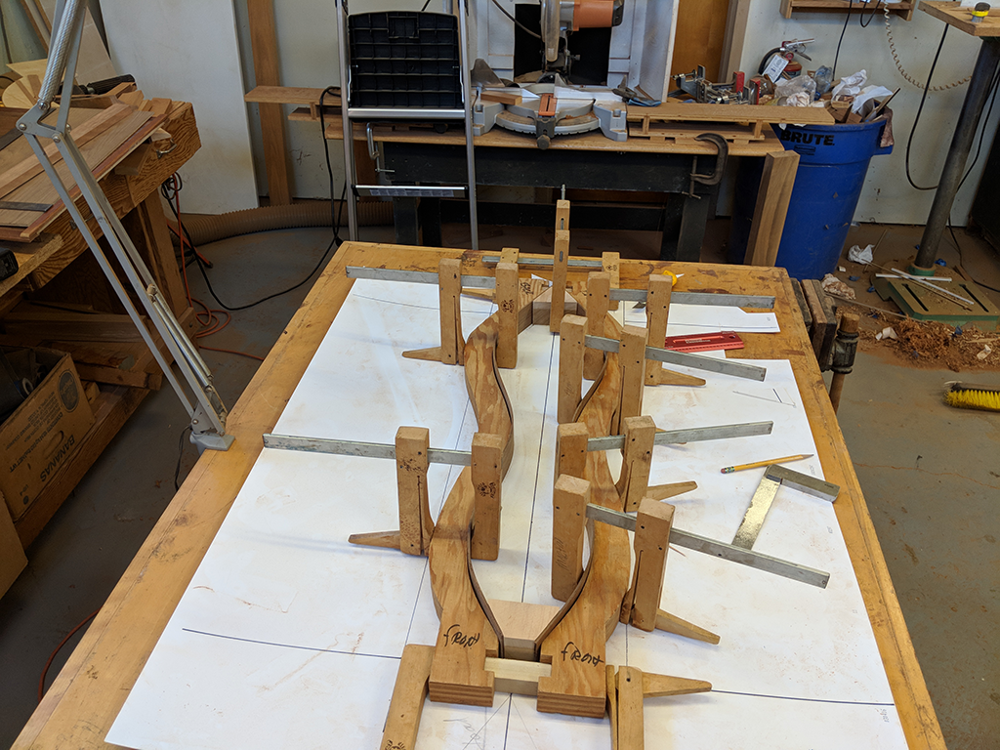
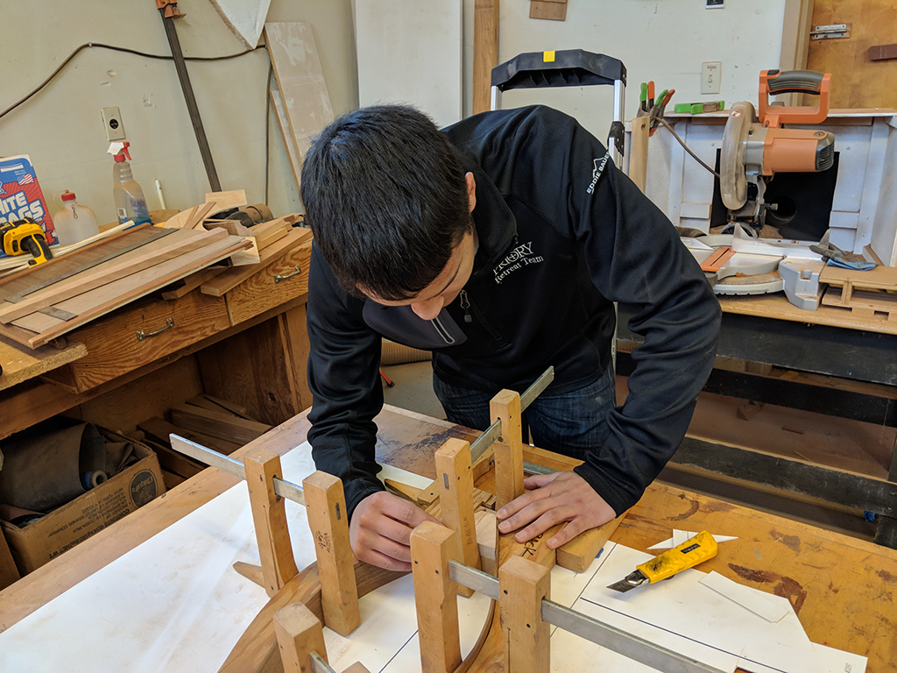
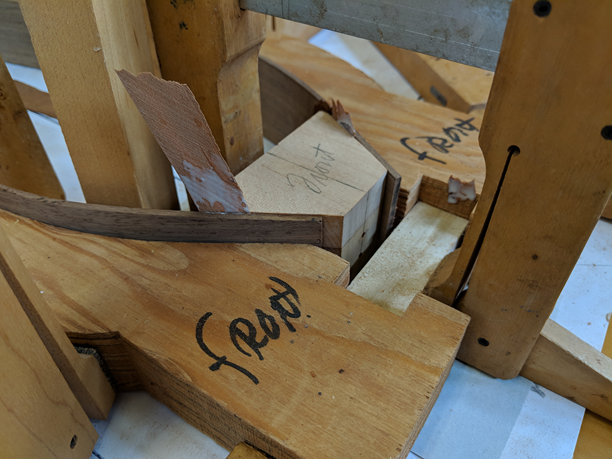
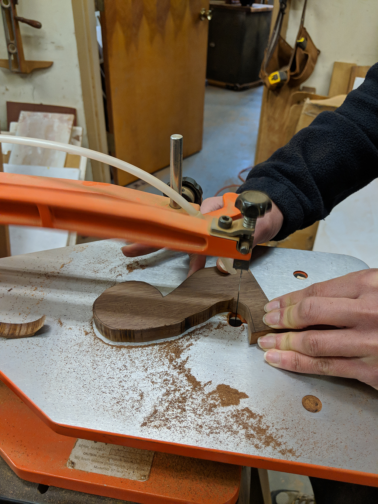
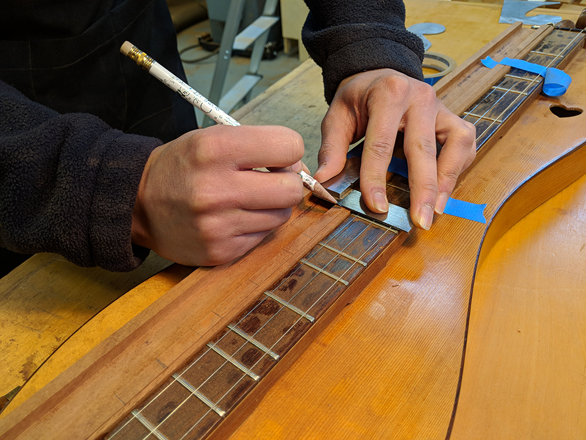

|  |  |  |
|---|---|---|
|  |  |  |
Update 3: It Looks Like a Dulcimer!
By Mark on March 26, 2018
As we approach the end of March, I am beggining to have the first incling of anxiety that I won't finish in time. I am behind where I expected to be at this point. However, Spring Break is next week and I can work a ton on this project.
A Little History
I've been doing a decent amount of research into the mountain dulcimer. Here's a little bit of background that I've found that I'd like to share with you:
The dulcimer, which not only sounds amazing when played, also has a "sweet" name: "The word dulcimer, translates from the Greek "dulce" meaning sweet and the Latin "melos" meaning song, thus the name means sweet song."
It was brought to the Appalachian Mountains by "the English immigrants who came into contact with this instrument named it after their version of a hammered dulcimer. Of course, these instruments are not related, but both have a sweet tone about them. Since the English settlers had never seen this type of instrument before, it is only logical that they would name it after one they were familiar with hearing...However, the dulcimer's early roots are actually in a European instrument, the German scheitholt."
What's Been Built
Since the last project update where I had steamed the sides, cut the 3 pieces of wood that I needed to build the fretboard, glued these pieces together, and cut interior trim, I've finally built something that resembles a dulcimer.
I finished the drawing of the end blocks, and I cut them out using a verticle band saw. The finished product is shown in the second image. After doing this twice, I set up the basic shape of the dulcimer (using clamps).
Once everything lined up, I glued the end blocks to the side panels. This needs to be done extremely carefully so that all pieces line up. If they don't, it will mean bad misalignments down the road. You can see the glueing process in the fourth and fith images.
After the glue dried over night, I took off the clamps to what now has the basic shape of a dulcimer. This is in image six. I love the look of the walnut sides: I expect this to turn out great (if I can finish in time...).
The next step was to begin measuring and cutton out the pieces for the head of the dulcimer (where the tuners go). I did this using an organge jig saw, which allows me to cut tight curves. I'll need to find the exact measurements of the tuners before I can move forward with the head, but I made a great start.
The last thing I did was cut the spaces for the frets in the fretboard that I built before the last status update. In image nine, you can see me measuring where each cut would be. I then used a dedo saw to cut these spaces. I also used that saw to hollow out the bottom of the fretboard to save on weight.
Next week is spring break, so I hope to make immense progress on the dulcimer and hopefully finish the head piece and glueing in the frets.
 |
 |  |